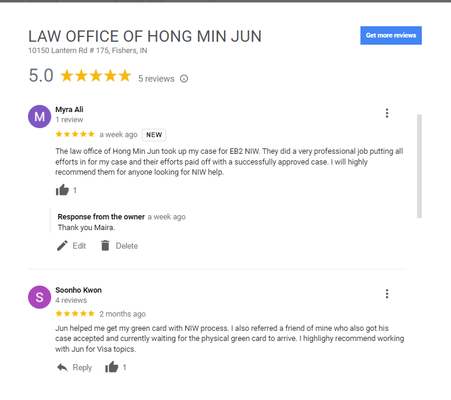
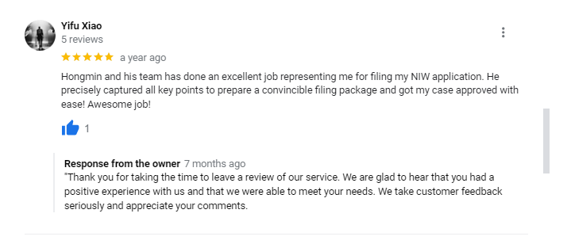

Testimonials
The Law Office of Hong-min Jun has a proven track record of
successfully handling NIW cases across various fields. Our
expertise extends beyond the typical STEM fields to include
music composers, installation artists, pianists, medical doctors
(including Korean traditional medicine doctors), information
scientists, architects, lawyers, accountants, stock investors,
career counselors, and more. In particular, we specialize in
artists’ NIW applications, where our extensive
experience enables us to analyze applicants' strengths based on
their practical work experience, rather than just publications
or writings, which are often more relevant in these non- STEM
areas.


related articles
- What is National Interest Waiver?
- Self Petition
- Recommendation Letters
- Matter of Dhanasar
- List of Documents that are needed for NIW application
more blog posts
- The Importance of Time Frame in National Interest Waiver Applications
- Don’t want to deal with PERM? Let’s talk about NIW Green Card!